Launch with confidence, not just hope. KCA learns from 300,000+ past Kickstarter projects to estimate your funding success, find comparable campaigns, and keep itself fresh through an automated retraining pipeline.
A web app that lets creators evaluate and improve a crowdfunding campaign before it goes live.
An AI-driven full-stack web application that helps creators assess and refine their fundraising campaign before launch.
Computes a real-time “Success Probability Score” with a classifier trained on 300,000+ historical Kickstarter projects.
NLP embeddings plus vector similarity search (pgvector) retrieve past campaigns with a similar structure, turned into actionable case studies.
Microservices architecture with an automated retraining pipeline, experiment tracking (MLflow), and a quality gate for continuous improvement.
Every target-aware feature is fitted on the training split only, so evaluation reflects real-world performance.
Most of the gain comes from how campaigns are represented, not from which algorithm is chosen.
A $10k goal means different things in Dance and in Technology, so goals are compared against category peers.
Focus on things a creator controls before launch: goal, duration, timing, title, and category.
The project journey — from understanding the data to building the ML platform.
Before any modeling, I looked at class balance, category effects, goal sizing, seasonality, and competition.
Failed : Successful ≈ 1.39 — balanced enough to train without resampling tricks.
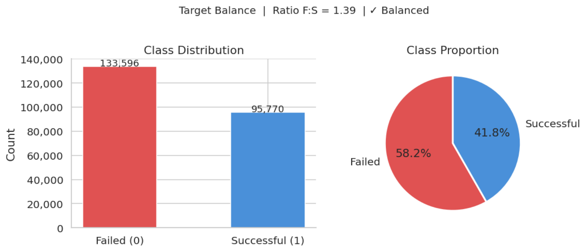
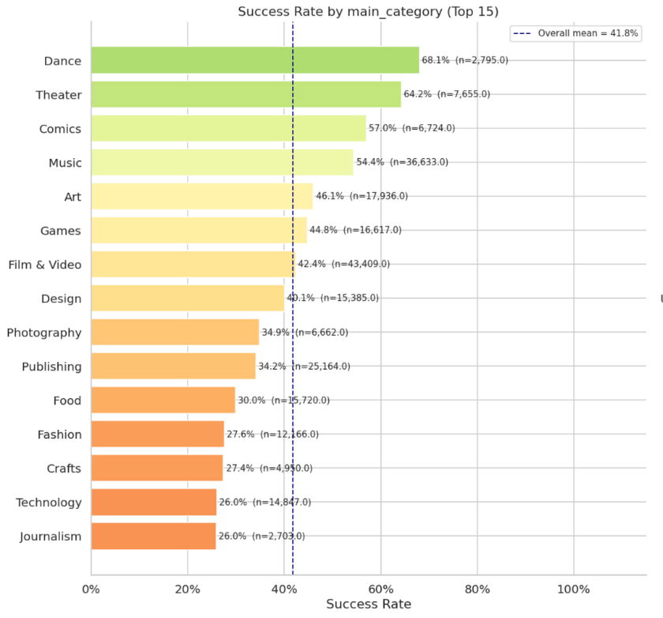
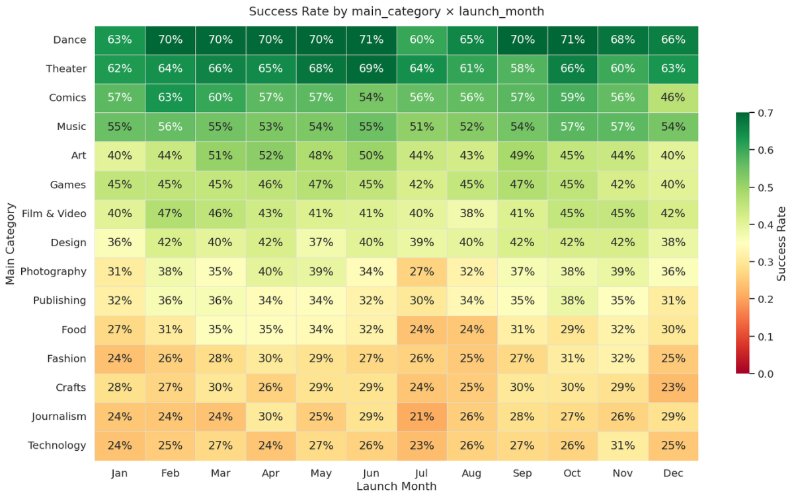
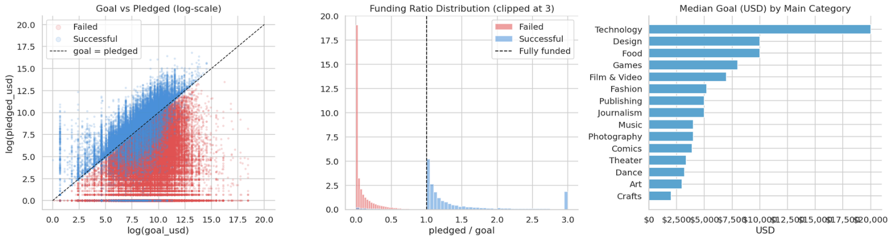
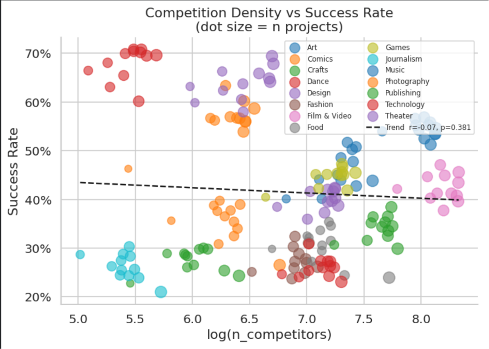
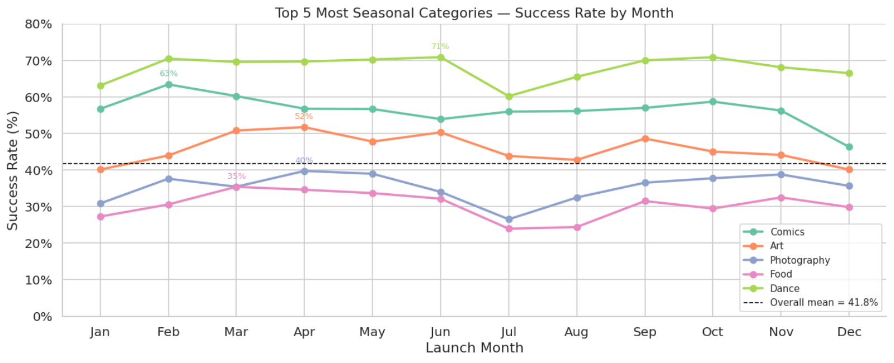
Nine feature groups. Anything that touches the target is fitted on the training split only.
Log scale to reduce skew, daily pressure (goal / duration_days), weekly pressure.
Title length, word count, punctuation pattern, capitalization style, quadratic length term.
Cyclic encoding of launch/deadline time, day-of-week, hour bucket, year trend, duration.
Binary encoding compresses the high-cardinality country column into bit columns, with no target leakage.
Per-category history: average success rate, goal stats (mean/median/std), project count. Fitted on train only.
How this goal compares with category peers: percentile rank, ratio to mean/median, goal-duration interaction.
Decision-tree-style signals: low-success category, extreme goal, short high-goal campaign, “easy win”.
Category success rate × goal rank and log goal, exposing joint effects a single feature can’t show.
Category and main_category as smoothed success rate (smoothing = 10), fitted on train only.
Logistic Regression, Decision Tree, Random Forest, LightGBM, and CatBoost were evaluated with AUC-ROC on all features and on a permutation-selected subset.
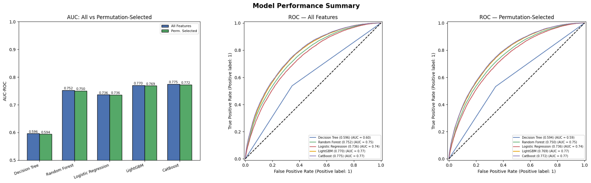
Three complementary views: how much a feature matters, whether it holds up across folds, and whether it’s built the same way at training and inference time.
Model-agnostic. Shuffle one feature and measure how far AUC drops: a big drop means the feature matters. Useful for opening up black-box models.
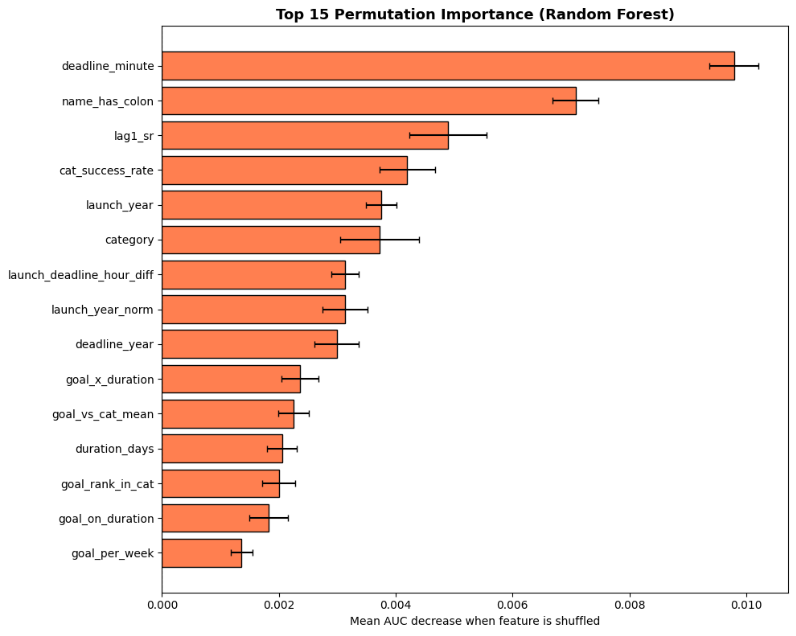
“Is the value of this feature trustworthy on new data?” Example: a category with only 5 training projects can show a 1.0 or 0.0 success rate. A Target Encoder (smoothing = 10) pulls such values toward the global mean.
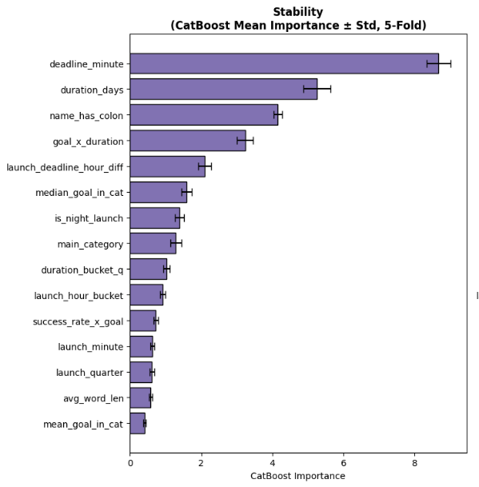
“Is the feature built the same way at training and at inference?” Non-target features are created before the train/test split; target-based features and flag thresholds are fitted on train only and then applied unchanged to test.
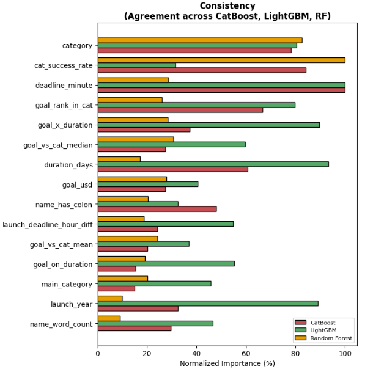
Consistency is about the process; Stability is about the outcome. A good model needs both. Consistent but unstable means a clean pipeline with noisy features. Stable but inconsistent looks great in a notebook and fails in production.
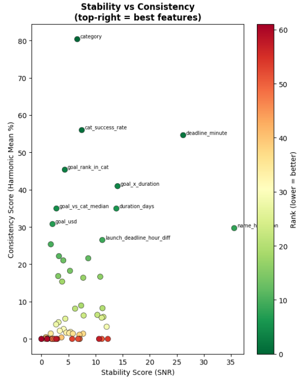
What it takes to move from a working notebook to a real product: five layers, six containers.
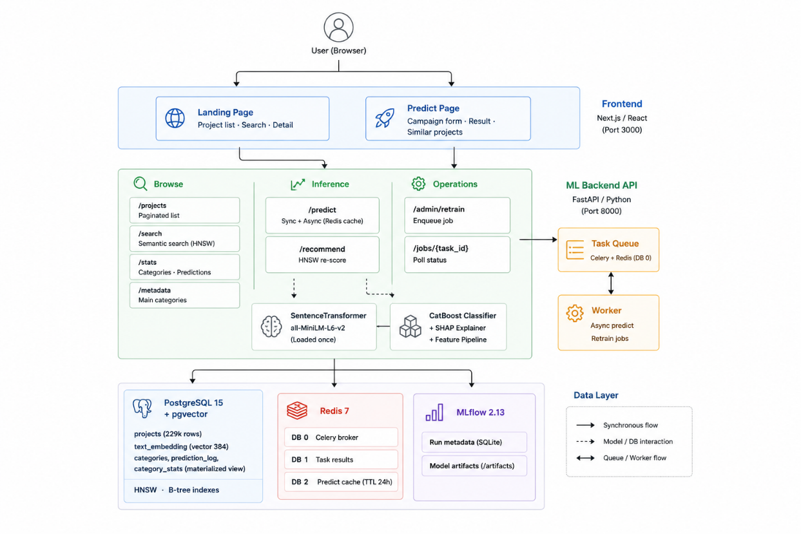
Receives requests. /predict creates a task, queues it, and returns a task_id immediately, so the API stays responsive.
Sits between FastAPI and Celery: holds queued tasks and temporarily stores results (TTL-based) for later retrieval.
Background processing separate from the API: pulls tasks from Redis, runs CatBoost, writes results back for lookup by task_id.
Next.js 14 front end for prediction, similarity search, and retraining, backed by a documented FastAPI service.
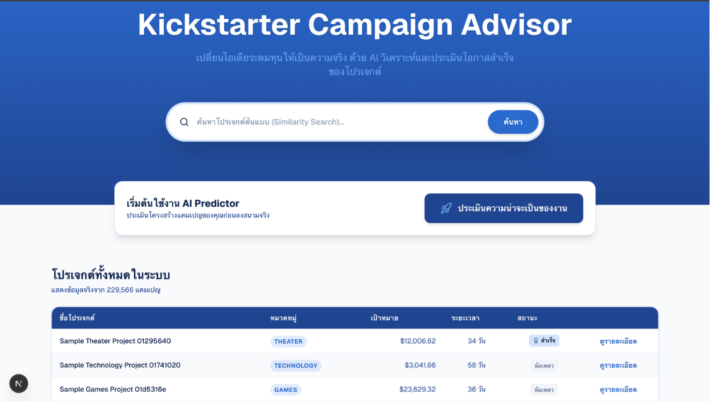
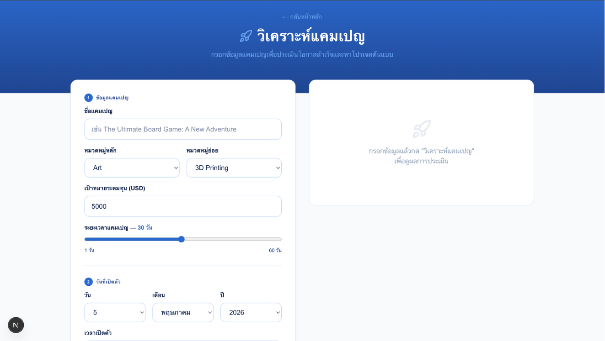
Type-validated with Python type hints, auto-generated interactive docs, standards-compliant (OpenAPI / JSON Schema).
PostgreSQL 15 + pgvector. HNSW index on the 384-dim text embedding, B-tree indexes on category / state / date, and a materialized view of pre-aggregated category stats.
| Column | Type | Description |
|---|---|---|
| project_id | VARCHAR | Primary key |
| name | VARCHAR | Campaign title |
| category | VARCHAR | Sub-category |
| goal_usd | FLOAT | Funding goal (USD) |
| duration_days | INT | Campaign length |
| state_binary | INT | 1 = success, 0 = fail |
| category_id | INT | FK → categories |
| text_embedding | VECTOR(384) | SentenceTransformer title embedding |
| struct_embedding | VECTOR(2) | From [goal_usd, duration_days] |
| created_at | TIMESTAMP | Ingestion time |
| source | VARCHAR | historical / sample / user_submission |
| Column | Type | Description |
|---|---|---|
| log_id | BIGSERIAL | Primary key |
| requested_at | TIMESTAMP | Request time |
| category | VARCHAR | Submitted category |
| goal_usd | FLOAT | Submitted goal |
| duration_days | INT | Submitted duration |
| prob_success | FLOAT | Predicted probability (0–1) |
| is_viable | BOOLEAN | Passed the threshold |
| model_version | VARCHAR | Model used |
| source | VARCHAR | api / celery |
| categories | Type | Description |
|---|---|---|
| category_id | SERIAL | Primary key |
| name | VARCHAR | Sub-category |
| main_category | VARCHAR | Main category |
| created_at | TIMESTAMP | Added time |
| category_stats | Type | Description |
|---|---|---|
| category | VARCHAR | Sub-category |
| total_projects | INT | Projects in category |
| successful_count | INT | Successful projects |
| success_rate | FLOAT | 0–1 |
| avg_goal_usd / median_goal_usd | FLOAT | Goal stats |
| avg_duration_days | FLOAT | Average length |
MLflow closes the traceability gap for models in production: each training run records its parameters, evaluation metrics, and model version, so any model can be traced back to the experiment that produced it.
POST /admin/retrain enqueues a Celery job; the dashboard polls /jobs/{task_id}.
Loads the training data from PostgreSQL, trains CatBoost, logs params and metrics to MLflow.
Each run is tagged quality_gate: passed / failed so a weaker model doesn’t silently replace the current one.
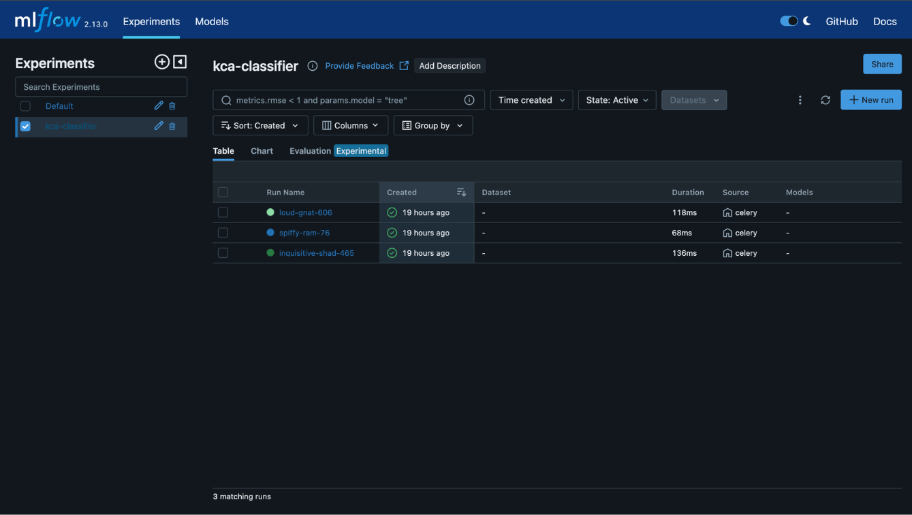
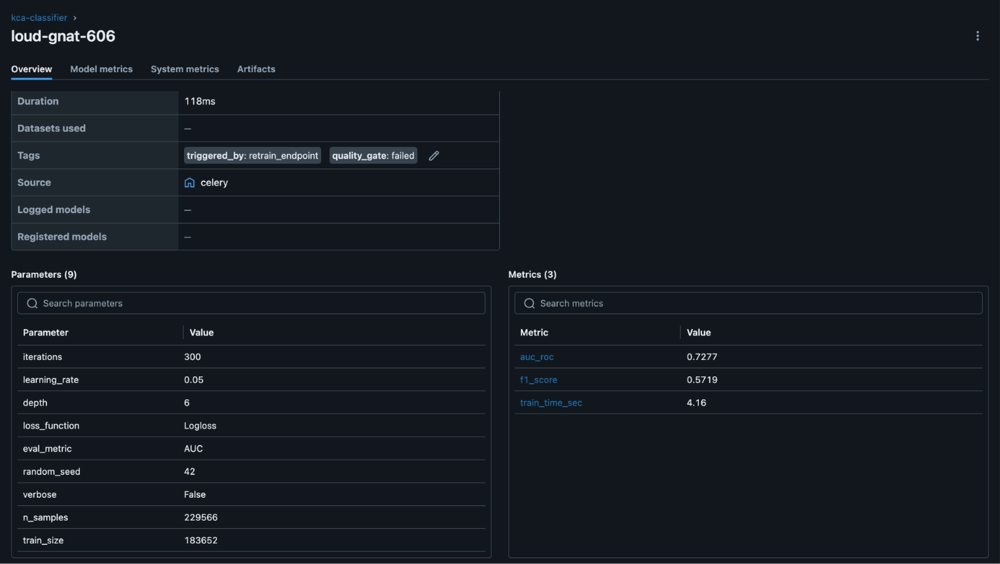
Prerequisites: Docker Desktop, Python 3.10+ (for the migration script), and the trained model files (.pkl) inside backend/models/.
# Step 1 — start all 6 services docker compose up -d docker compose ps # Step 2 — import data (first time only) pip install psycopg2-binary pandas numpy python migrate_to_db.py
| Container | Service | Port |
|---|---|---|
| kca-postgres | PostgreSQL + pgvector | 5432 |
| kca-redis | Redis | 6379 |
| kca-ml-api | FastAPI + ML models | 8000 |
| kca-ml-worker | Celery worker | — |
| frontend | Next.js | 3000 |
| kca-mlflow | MLflow tracking server | 5001 |
| Interface | URL |
|---|---|
| Web application | localhost:3000 |
| API docs (Swagger) | localhost:8000/docs |
| MLflow UI | localhost:5001 |